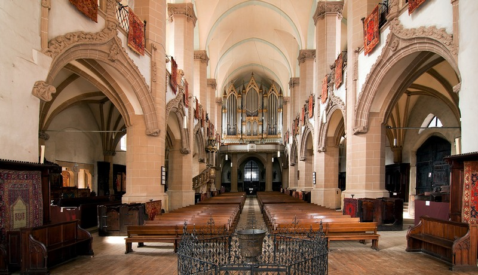
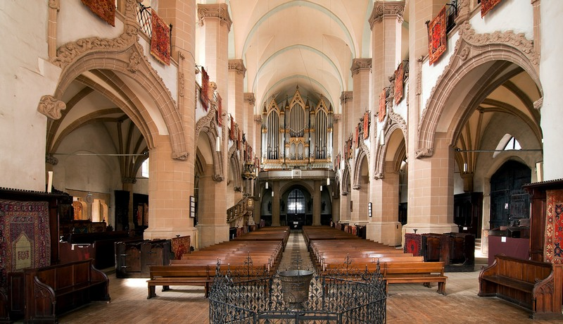
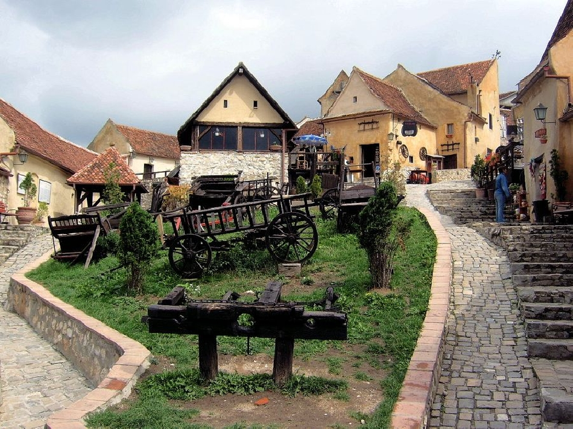
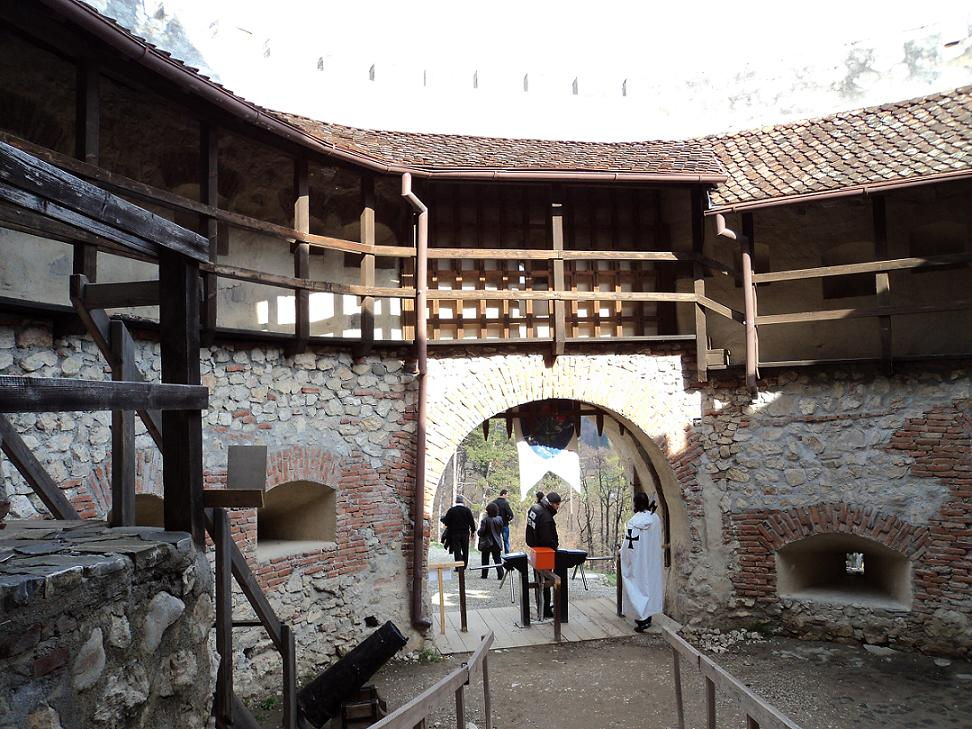
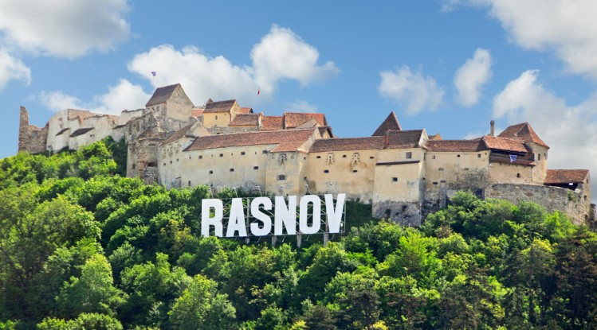
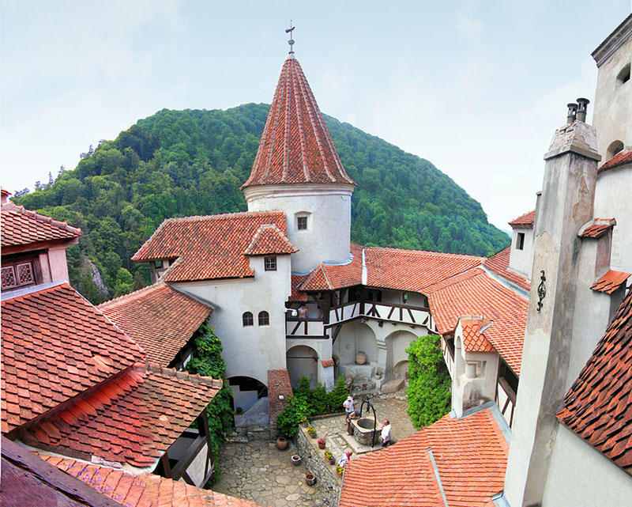
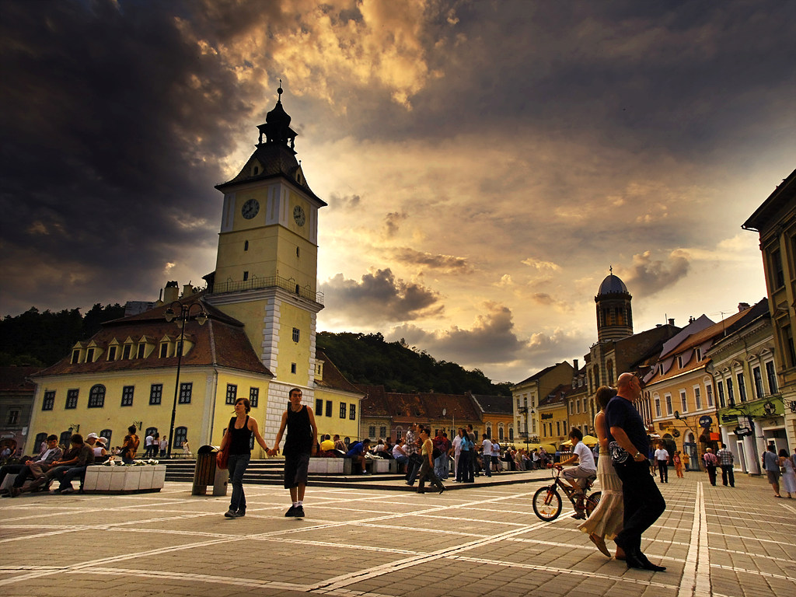
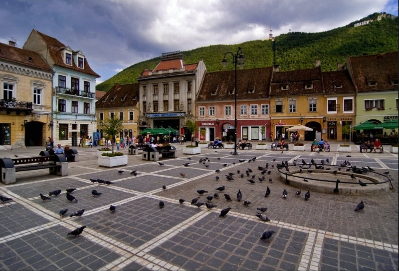
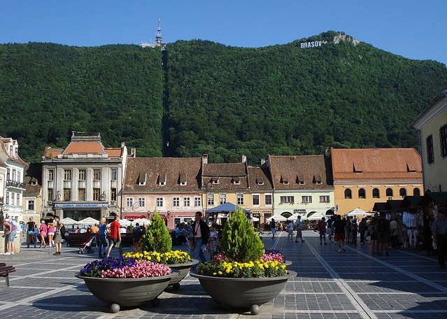
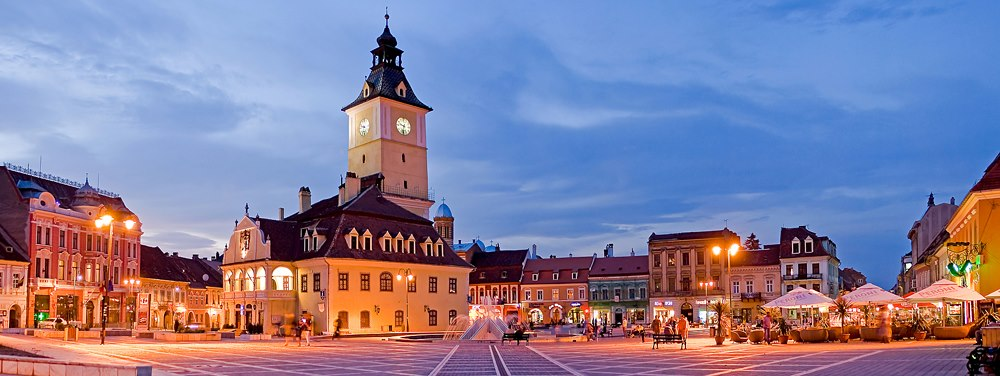

- Biserica Neagra
Biserica Neagră, unul dintre simbolurile oraşului Braşov, este biserica parohială a Bisericii Evanghelice C.A. din România. Numele actual l-a primit după ce, în 1689, incendiul care a cuprins tot oraşul a tranformat-o într-o ruină. Iniţial ea purtase hramul Sfintei Maria. După Reformă a fost cunoscută ca "Biserica Mare", însă denumirea populară de după incendiu,„Biserica Neagră“, a fost acceptată oficial în secolul al XIX-lea.
Biserica Neagră este cea mai mare constucţie sacrală din România, cea mai mare biserică-hală la răsărit de Viena şi unul dintre cele mai mari lăcaşe de cult medievale de la domul Sf. Ştefan din Viena pînă la Hagia Sophia din Constantinopol. Orga Buchholz, construită în perioada romantismului timpuriu, este cea mai mare orgă mecanică din România. Sunetul ei atrage în fiecare an organişti atât din ţară cât şi din străinătate, care îşi doresc să concerteze aici. La data construirii ei, se număra printre cele mai mari orgi din Europa.
 

- Cetatea Rasnov
Cetatea Râșnov este o cetate țărănească veche din orașul Râșnov (județul Brașov). Este una dintre cele mai bine păstrate cetăți țărănești din Transilvania și a fost construită în secolele 13-14 de către locuitorii așezării cu același nume, cu scopul principal de se apăra împotriva atacurilor tătarilor. Aceasta a fost construita in secolul al XIV-lea, in varful celui mai inalt deal din zona dominand tot sesul Barsei.


Fiind o cetate țărănească, ridicată în evul mediu de locuitorii Râșnovului cu scopul de a se adăposti și apăra în vremurile invaziilor vrăjmașe, trecutul ei este strâns legat de întreaga dezvoltare istorică a populației respective.In prezent, cetatea a fost restaurata si gazduieste un muzeul care expune piese de istorie locala: fotocopii de documente, arme, unelte.

- Turnul Alb si Turnul Negru
Construit între anii 1460 și 1494, Turnul Alb impresionează și astăzi prin masivitatea și zveltețea liniilor sale arhitectonice. Rezumând arhitectura sa în date putem spune: plan semicircular deschis; peste 30 m diferență de nivel față de zidurile orașului; înălțime: 20 m spre oraș și 18 m înspre deal; zidurile au la bază 4 m, iar diametrul turnului măsoară 19 m. Turnul Negru este unul dintre cele patru turnuri de observație ale Cetății Brașovului construit ca o fortificație independentă amplasată în afara zidurilor cetății, înaltă de peste 11 metri
- Castelul Bran
Castelul Bran, sau, cum le place amatorilor de senzații, Castelul lui Dracula, ridicat aici cu mai bine de 600 de ani în urmă, păstrează și transmite vizitatorilor ceva din mândria cavalerilor care i-au călcat pragul în vremurile sale

Castelul Bran se situează la mai puțin de 30 km de Brașov, construit pe o stâncă, într-un amplasament cheie din punct de vedere strategic. El adăpostește în acest moment Muzeul Bran, muzeu ce se întinde pe cele patru etaje ale castelului. Aici sunt expuse colecții de ceramică, mobilier, arme și armuri, iar în curtea castelului se află un mic muzeu al satului, cu case tradiționale din regiunea culoarului Rucăr-Bran.
- Piata Sfatului
Piata Sfatului Brasov este inima orasului, este locul de unde se aude gongul care anunta ora exacta, este piata in care a castigat Monica Anghel, romanca noastra, Cerbul de Aur in 1996, este zona cu cele mai multe batai de aripi ale porumbeilor, iar lista poate continua.
Inca din perioada Evului Mediu, Piata Sfatului aduna, cu ocazia anumitor targuri, negustori unguri, sasi si romani, negustori care-si vamuiau marfurile pana spre strada Muresenilor

Se spune ca in piata era amplasat Stalpul Infamiei, stalp pe care erau judecate si condamnate nu numai vrajitoarele, ci si alte persoane gasite vinovate de diverse fapte, carora li se aplicau pedepsele corporale pe masura. Piata Sfatului Brasov este locul unde a fost decapitat seful breslei cizmarilor, Stefan Stener, intrucat acesta a avut cutezanta de a se impotrivi intrarii austriecilor in zona.


Aspectul impozant al pietei este redat de structura arhitecturala a caselor ce o imprejmuiesc, cladiri care au vazut si au auzit atatea concerte si au ascultat atatea povesti.
